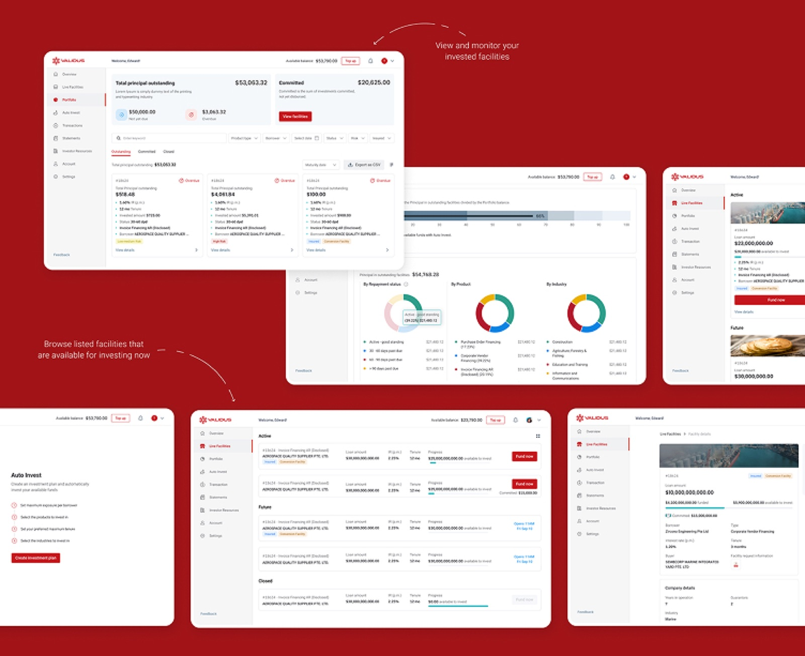
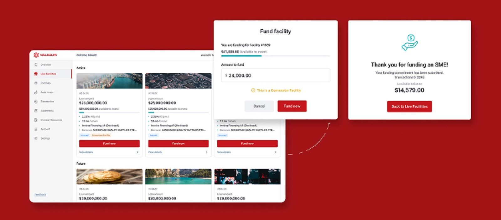
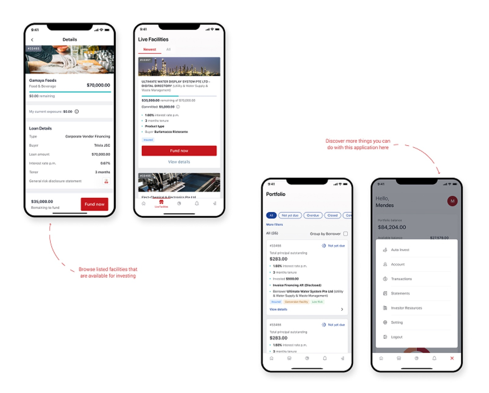

Investor-side web app for Validus, Southeast Asia's leading SME lending marketplace — S$5b+ disbursed across 120,000+ loans.

The business problem
Validus runs a two-sided marketplace: SME borrowers on one side, accredited investors funding their loans on the other. The platform's growth depends on both sides scaling together, but the two user types have nothing in common. Borrowers are SME owners managing cash flow; investors are finance professionals managing capital. The Investment web app had to feel like a product built for investors specifically, not a shared interface compromised between two audiences.
The design problem
Designing the investor side meant solving three things.
- Accredited investors needed enough information to assess risk and commit capital with confidence, without turning the interface into a regulatory document.
- The same product had to ship across three markets, Vietnam, Singapore, Thailand, each with its own regulator, currency, language, and investor expectations.
- Capital sitting idle in an investor's account isn't earning, so the platform had to give investors a way to auto-invest their available balance into new loans matching their criteria, without losing the control investors expect over where their money goes.
Approach
I worked alongside one other designer, splitting ownership across the Investor and Borrower apps. My process started with market research and competitor analysis across regional and international lending platforms, then face-to-face user testing with real investors in each market. Prototypes were validated in Maze before high-fidelity design. The design system was built to support both apps and three markets from the same source, keeping the marketplace consistent on both sides.
Key design decisions
Accredited investors don't need more data. They need enough of the right data, in the right order, to commit capital. The decision was to design every loan listing around three questions investors actually ask: Who is borrowing, what is the risk, and what is the return? The flow stops being a database query and starts being a decision-support tool.

The same investor app had to work for a fintech-fluent investor in Singapore, a regulated retail investor in Thailand, and a first-time digital investor in Vietnam. The decision was to design the core experience once, then localise the layers that genuinely differ, currency, language, regulator-specific disclosures, KYC requirements, without forking the product. Filters, navigation, and the investment flow stay the same across markets; only the parts that have to change do.
The auto-invest feature allows investors to set criteria for how their money is invested, loan grade, tenor, sector, anchor, and maximum exposure per loan. The platform then automatically deploys capital according to those rules.

Outcomes
Shipped the Investor web app across three regulated markets (Vietnam, Singapore, Thailand), as part of the platform that has now disbursed over S$5 billion across 120,000+ SME loans.
Validated the product post-launch through end-user testing, measuring satisfaction, usability of new features, and onboarding completion for first-time investors.
Reflection
The most interesting work wasn't designing either side in isolation. It was designing the moments where they meet: how an investor sees a borrower's risk, how a borrower sees an investor's commitment. If I were continuing on the product, the next focus would be the connective layer between the two sides, making the marketplace feel less like two apps sharing a database, and more like one product that two user types experience differently.